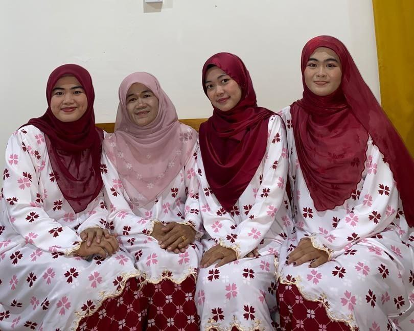
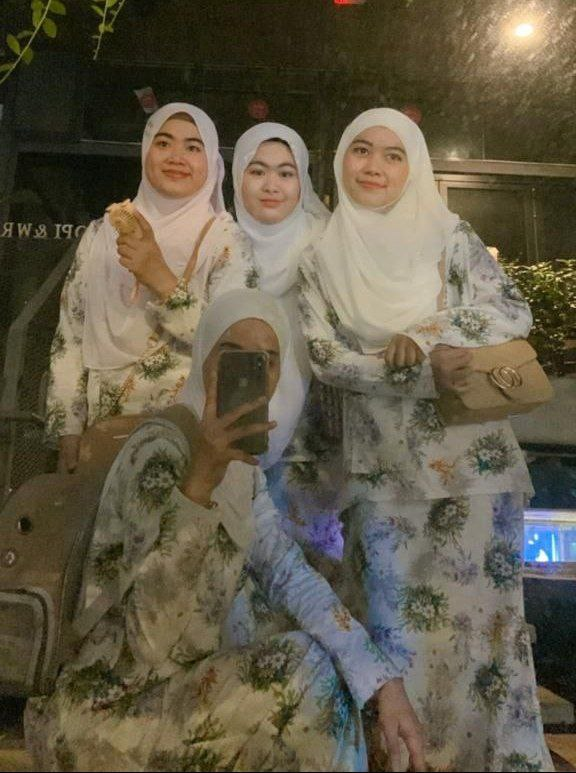
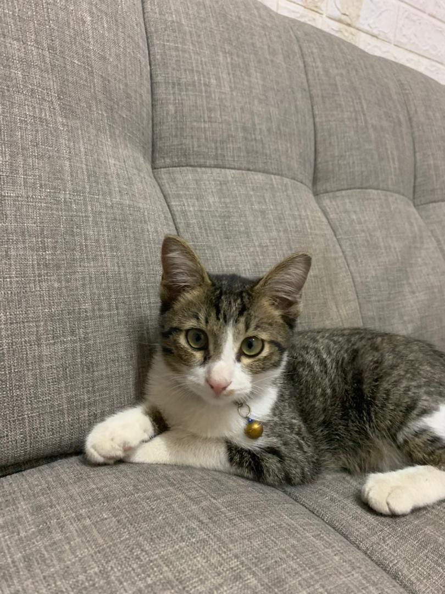
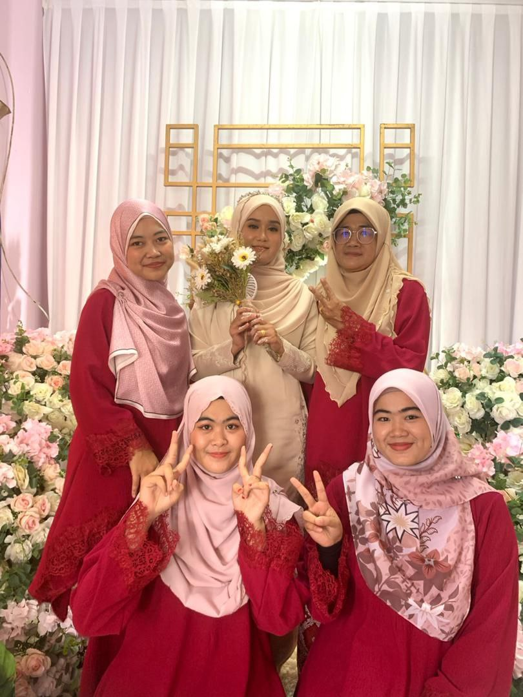
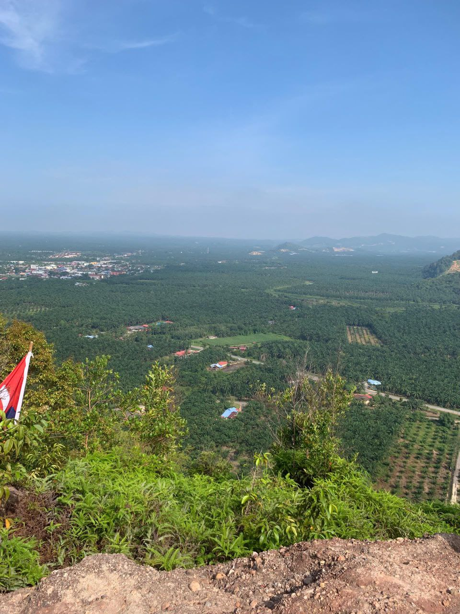
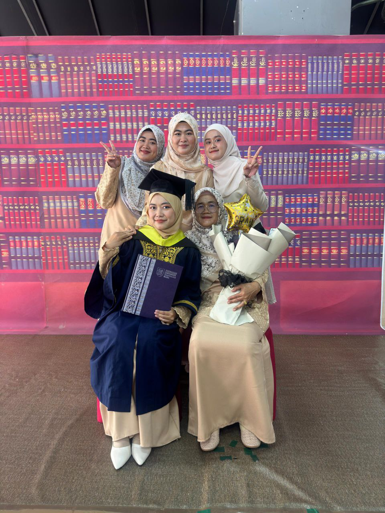
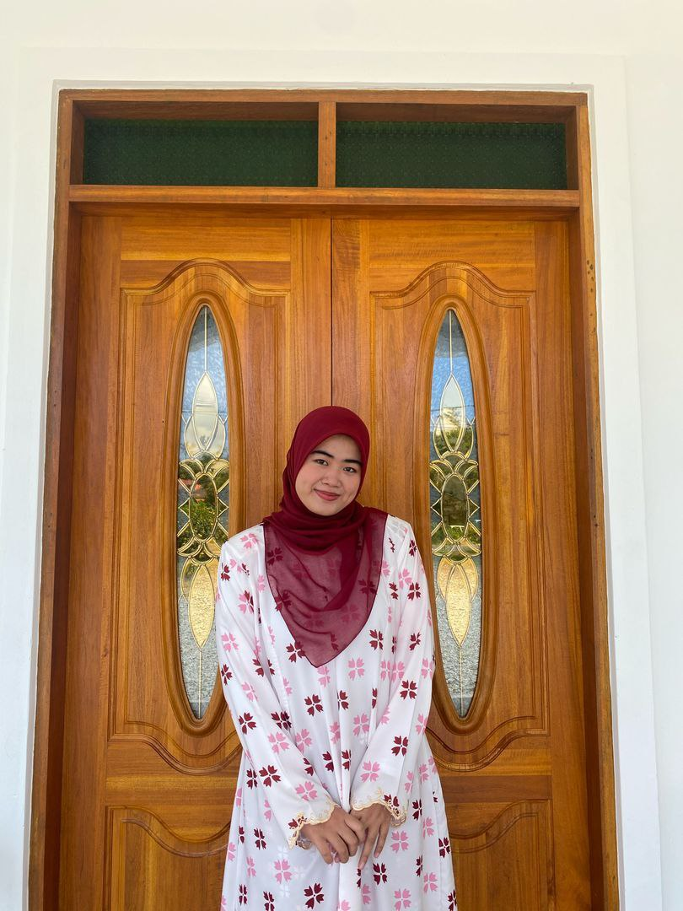
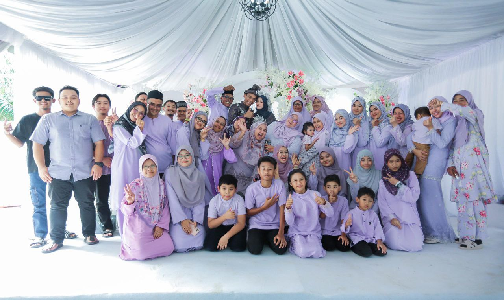
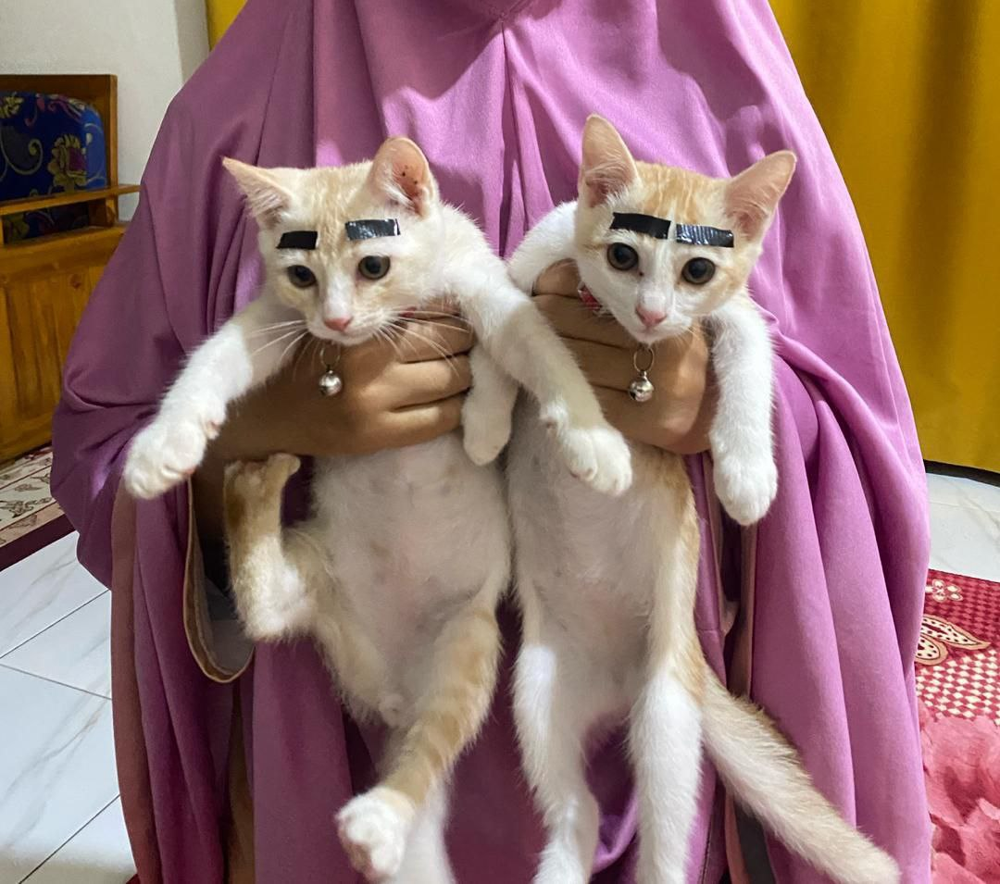
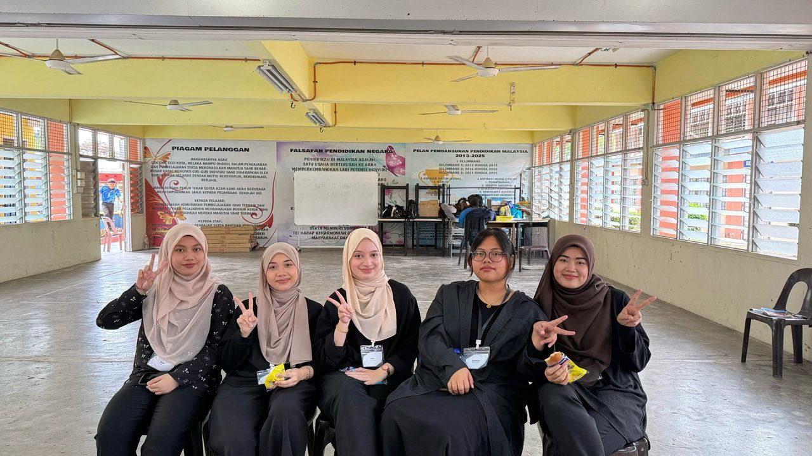

🌸 Family

This is a photo of my lovely family 💖
My beloved mother's name is Rujanah binti Pingat and she was born at Sultanah Nora Ismail Hospital on 1967, October 4. She is the best mother in the world. She always wants her children to be successful. She always advises me to study hard and get my Diploma on time. I also have an older sister and a younger brother. My older sister is named Nurasyiqin binti Roslan and is 26 years old. She currently works at a food service and catering company in Shah Alam. I also have a younger sister named Nuraini Syaminah and is 18 years old.
🌸 Photo Gallery








